Complementary filtering for acceleration: low- & high-frequency
tagtools project team
2021-08-18
acceleration-filtering.RmdWelcome to the acceleration-filtering vignette! Thanks for taking some time to learn our package; we hope it’s, thus far, all you’ve dreamed it would be.
In this vignette, you will explore postural dynamics and specific acceleration in the time and frequency domains. Specifically, you’ll load in some new data and use complementary filters to separate intervals of movements into distinct frequency bands, i.e., posture (low frequency) and strikes/flinches (high frequency), in order to gain insight about the movements of a beaked whale.
Estimated time for this practical: 20 minutes.
These vignettes all assume that you have R/Rstudio installed on your machine, some basic experience working with them, and can execute provided code, making some user-specific changes along the way (e.g. to help R find a file you downloaded). We will provide you with quite a few lines. To boost your own learning, you would do well to try and write them before opening what we give, using this just to check your work.
Additionally, be careful when copy-pasting special characters such as _underscores_ and ‘quotes’. If you get an error, one thing to check is that you have just a single, simple underscore, and 'straight quotes', whether 'single' or "double" (rather than “smart quotes”).
Setup
For this vignette we will use data from a suction cup tag attached to the back of a beaked whale. This dataset is built into the tagtools package, so you can access it using system.file.
Write testset1 to the object bw, for “beaked whale”. Then use plott() to inspect it.
library(tagtools)
bw_file_path <- system.file("extdata", "testset1.nc", package = "tagtools", mustWork = TRUE)
bw <- load_nc(bw_file_path)
plott(X = list(Depth = bw$P, Acc = bw$A, Mag = bw$M))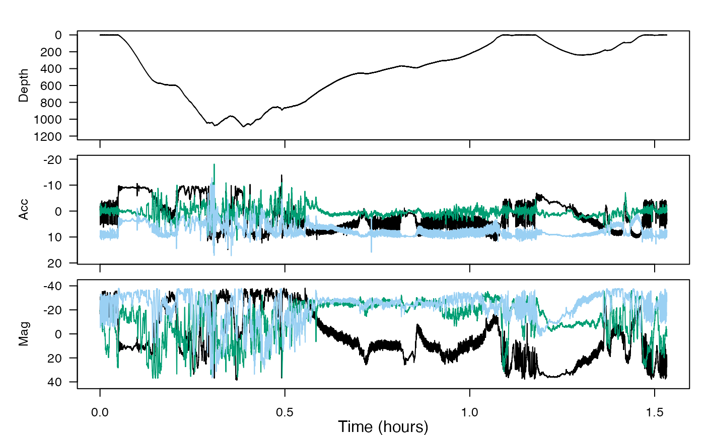
This dataset contains a deep dive followed by a shallow dive. We want to infer the function of these by looking for locomotion effort and sudden changes in acceleration that could be indicative of prey capture attempts. We are also going to look for changes in swimming gait.
Complementary filtering
To separate slow orientation changes from postural dynamics in locomotion, we need to choose a filter cut-off frequency below the stroke frequency. We can estimate the dominant stroke frequency using dsf(). There is a bout of steady swimming between minutes 35 and 42 in the data. Use crop_to() to pick out the accelerometer data in that interval:
Mimic the previous code to similarly crop the pressure (depth) and magnetometer data:
Dseg <- crop_to(X = bw$P, tcues = c(35*60, 42*60))
Mseg <- crop_to(X = bw$M, tcues = c(35*60, 42*60))Plot the three of them together to make sure you got it right.
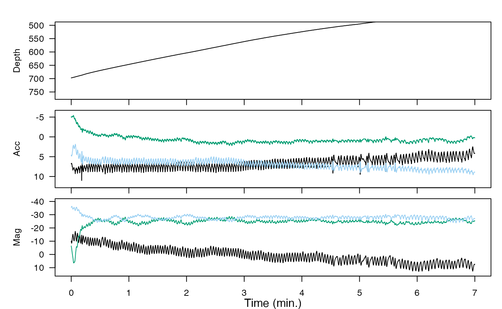
Then, run dsf() on Aseg to get the mean stroking rate:
dsfa <- dsf(Aseg)$fpk # estimated stroking rate in HzTry doing the same with the magnetometer data:
dsfm <- dsf(Mseg)$fpk # another estimateAre the estimated stroke rates similar?
Yes, they should be. The acceleration-based estimate is .3821574, and the magnetometer-based estimate is .3807932.
The magnetometer is not sensitive to specific acceleration, so why do stroking motions show up in Mseg?
The animal is changing its position, so the magnetometer reading will change.
Refer to your plots of Mseg and Dseg to try and figure out which axis the stroking motions show up in.
A good starting choice for the filter cut-off frequency is 70% of the stroking rate (pick one of the estimates, or average the two). Call this value fc. Run a complementary filter on A to separate the slow and fast time-scales. Recall that A is stored under bw as bw$A:
fc <- 'YourValueHere' # your value for fc in Hz, a number, without quotes
Af <- comp_filt(bw$A, fc = fc)
str(Af, max.level = 1) #> List of 2
#> $ lowpass : num [1:137976, 1:3] -1.22 -1.22 -1.21 -1.19 -1.17 ...
#> $ highpass: num [1:137976, 1:3] -0.624 -0.558 -0.516 -0.511 -0.471 ...The complementary filter returns a list containing two data matrices: the low-pass filtered data and the high-pass filtered data. Each of these is a three-column matrix because the filter is run on each column of the input data. So it is like you now have two accelerometers in the tag—one is only sensitive to low frequencies and the other is only sensitive to high frequencies. If you would like to get each matrix out of the cell array, do:
Alow <- Af[[1]] # low frequency A data
Ahigh <- Af[[2]] # high frequency A dataThe sampling rate of these is the same as for the original data. For simplicity, make a variable sampling_rate equal to the sampling rate and use plott() to plot the two filtered accelerations along with the dive profile:
sampling_rate <- bw$A$sampling_rate
plott(X = list(`Depth (m)` = bw$P$data,
`LF Accel` = Alow,
`HF Accel` = Ahigh),
fsx = sampling_rate)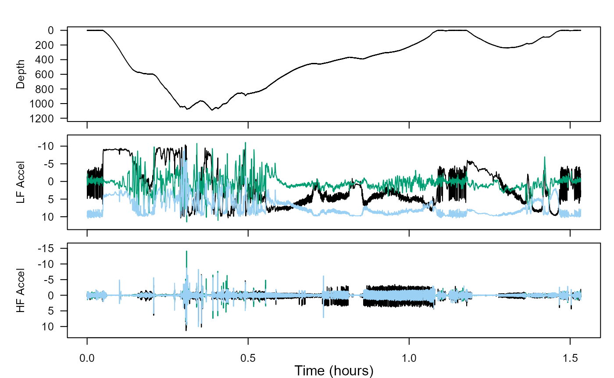
These two versions of acceleration are sometimes called ‘static’ and ‘dynamic’ acceleration. If the filtering worked, you should see that Alow has large, relatively slow changes in acceleration which are mostly to do with orientation. These are missing in Ahigh, which has the high frequency specific acceleration, having to do with propulsion and strikes or flinches.
If you like, zoom in to the section of steady stroking that you used for dsf—you should only see the stroking in Ahigh, not in Alow.
plott(X = list(`Depth` = bw$P$data,
`LF Accel` = Alow,
`HF Accel` = Ahigh),
fsx = sampling_rate, xlim = c(35*60, 42*60)/3600)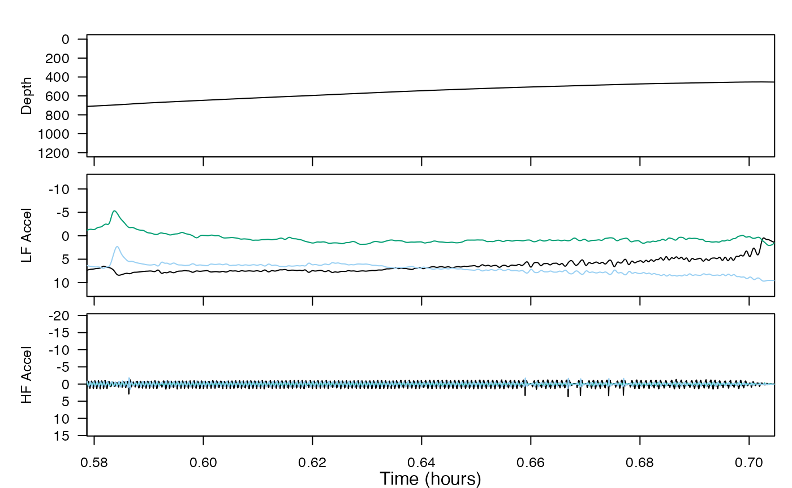
Locomotion style
We want to characterise the locomotion style of the animal during the deep-dive ascent. Using the plot you made above, zoom in on the ascent and see if you can identify intervals in which the animal appears to be just swimming steadily (hint: look for when Alow is fairly constant, indicating a steady orientation).
Do you see any changes in swimming style throughout the ascent? In particular, check out the swimming styles in time intervals (1) 36-38 minutes and (2) 56-58 minutes. Write two objects (say, intvl1 and intvl2) that contain these intervals in seconds, using c(YourStartTime, YourEndTime). Then, crop out the high frequency acceleration data in each of these intervals using crop_to(...). (Try and write the code yourself!)
intvl1 <- c(36*60, 38*60)
intvl2 <- c(56*60, 58*60)
Ah1 <- crop_to(Ahigh, sampling_rate = sampling_rate, tcues = intvl1)
Ah2 <- crop_to(Ahigh, sampling_rate = sampling_rate, tcues = intvl2)Now plott these together. Be careful when comparing, since plott puts them on different y-scales automatically to fit the data to the window!
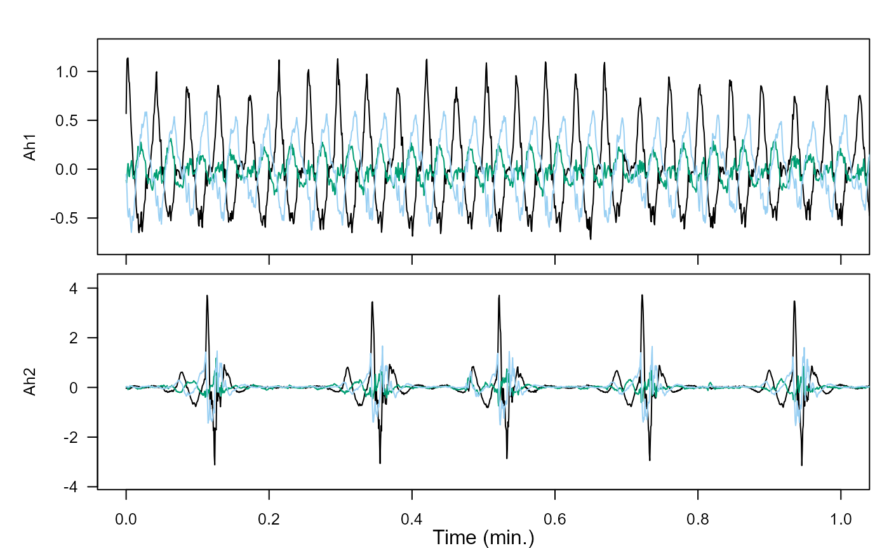
Comparing these two intervals of swimming, what do you conclude about the swimming styles? Look at the magnitude of the acceleration (the units are in \(m/s^2\)). You may want to compare the depth data in these intervals, too.
D1 <- crop_to(bw$P$data, sampling_rate = sampling_rate, tcues = intvl1)
D2 <- crop_to(bw$P$data, sampling_rate = sampling_rate, tcues = intvl2)
plot(x = (1:length(D1)), y = (-D1), xlab = "samples", ylab = "Depth") # plott doesn't make it very clear
plot(x = (1:length(D2)), y = (-D2), xlab = "samples", ylab = "Depth") # so we'll just use plotDoes one swimming style seem more energetic than the other?
The magnitude of acceleration in each peak is lower in the first interval (between \(-0.5\) and \(+1\) \(m/s^2\)), and this time interval is a time when the animal is swimming steadily upwards. However, the acceleration is changing quickly back and forth: the peaks come much more frequently, so that there are 46 of them within the two minutes. The second time interval is different, with higher magnitudes of acceleration (between \(-3\) and \(+4\) \(m/s^2\)). This time interval is also a time when the animal is swimming slightly upwards, but there are more visually obvious “bumps” in the path upwards, which actually correspond to the individual acceleration peaks. Possibly, rather than just ascending to the surface, the whale is exerting itself, accelerating very quickly, to try to catch prey. Overall, this second swimming style seems more energetic than the first.
Finally go back and plot the full high frequency acceleration data, Ahigh, then a portion of it cropped to the shallow dive. Use this to see whether there is active swimming in the shallow dive and, if so, which swimming gait is used there.
plott(X = list(`Depth` = bw$P$data,
`LF Accel` = Alow,
`HF Accel` = Ahigh),
fsx = sampling_rate)
intvl3 <- c(77*60, 89*60) # whole shallow dive, for context
intvl4 <- c(77*60, 79*60) # earlier in the shallow dive
intvl5 <- c(87*60, 89*60) # later in the shallow dive
Ah3 <- crop_to(X = Ahigh, sampling_rate = sampling_rate, tcues = intvl3)
D3 <- crop_to(X = bw$P$data, sampling_rate = sampling_rate, tcues = intvl3)
Ah4 <- crop_to(X = Ahigh, sampling_rate = sampling_rate, tcues = intvl4)
D4 <- crop_to(X = bw$P$data, sampling_rate = sampling_rate, tcues = intvl4)
Ah5 <- crop_to(X = Ahigh, sampling_rate = sampling_rate, tcues = intvl5)
D5 <- crop_to(X = bw$P$data, sampling_rate = sampling_rate, tcues = intvl5)
plott(X = list(Depth = D3, HfAccel3 = Ah3), fsx = sampling_rate, interactive = TRUE)
plot(x = (1:length(D4)), y = D4)
plott(X = list(HfAccel4 = Ah4), fsx = sampling_rate, interactive = TRUE)
plot(x = (1:length(D5)), y = D5)
plott(X = list(HfAccel5 = Ah5), fsx = sampling_rate, interactive = TRUE) 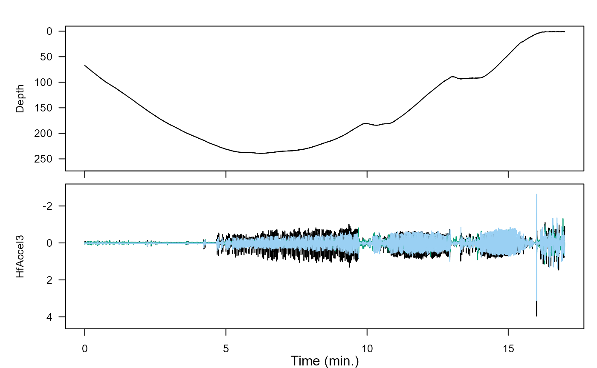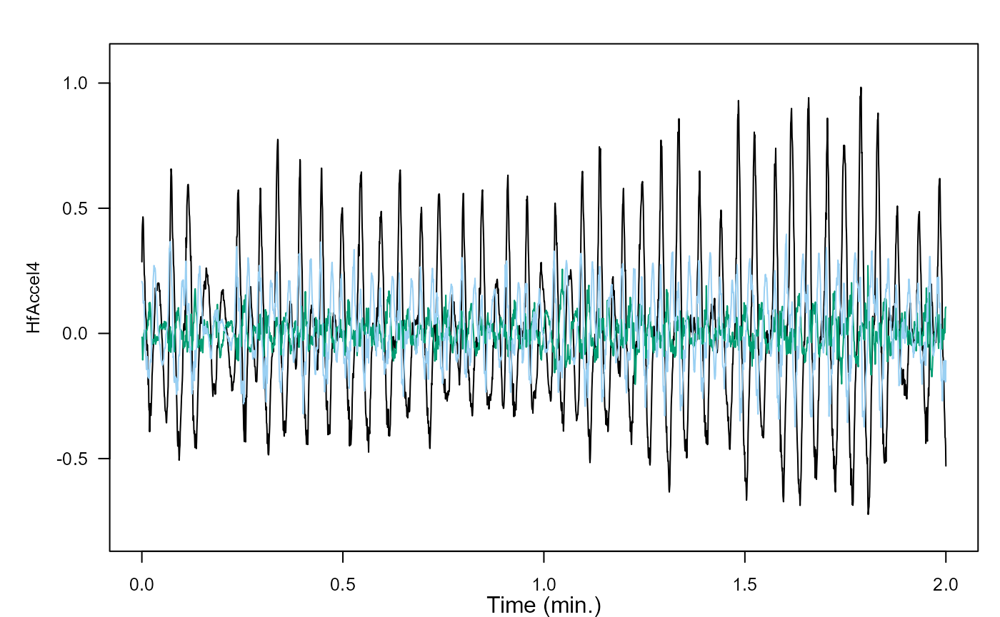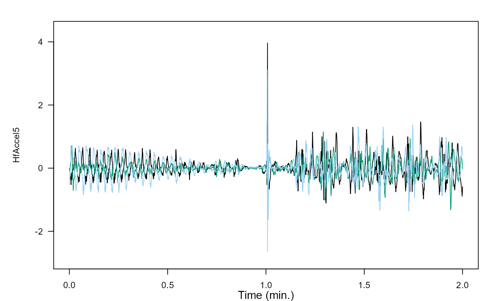
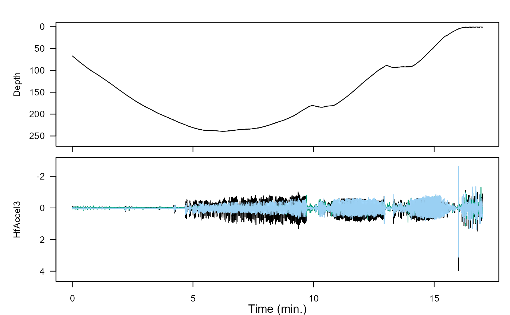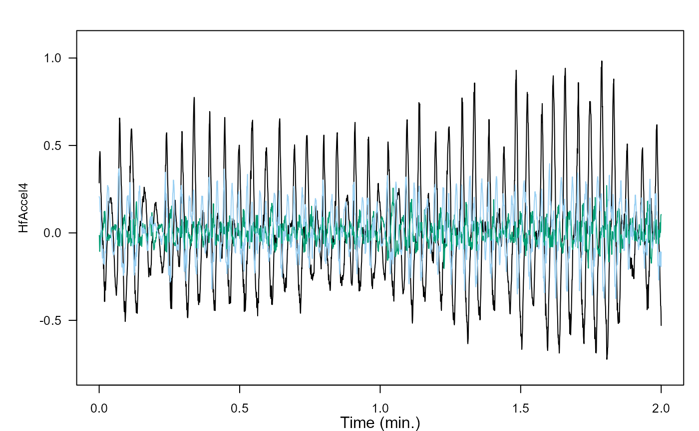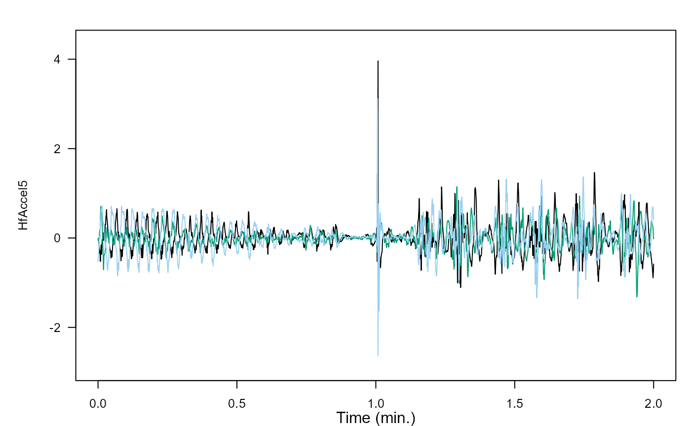
Any similarities to the swimming earlier? Any differences?
These two intervals look much more similar to intvl2 than intvl3. Large spikes in acceleration are almost nonexistent, with the magnitude of acceleration usually neatly between \(-1\) and \(+1\) \(m/s^2\). Further, the number of peaks in intvl4 (47 peaks in 2 minutes) is almost exactly the same as that in intvl2 (46 peaks in 2 minutes). intvl5 is slightly more complicated. As the whale approaches zero depth before the end of intvl5, almost all acceleration stops momentarily during the final glide to the surface. Once at the surface, the behavior is more erratic, representing perhaps a kind of relaxed frolicking, rather than an efficient swim upwards.
Review
You’ve learned how to separate low- and high-frequency acceleration data with a complementary filter, and done some interpretation of these two sets of data.
Aaaaand… congrats! You’ve aced this vignette.
If you’d like to continue working through these vignettes, jerk-transients is a very logical choice. So is magnetometer-filtering. These three vignettes all go together. Perhaps the most logical ordering is acceleration-filtering, then jerk-transients, then magnetometer-filtering. But, you do what suits your fancy/data!
Animaltags home pages: http://animaltags.org/ (old), https://animaltags.netlify.app/ (new), https://github.com/stacyderuiter/TagTools (for latest beta source code), https://stacyderuiter.github.io/TagTools/articles/TagTools (vignettes overview)